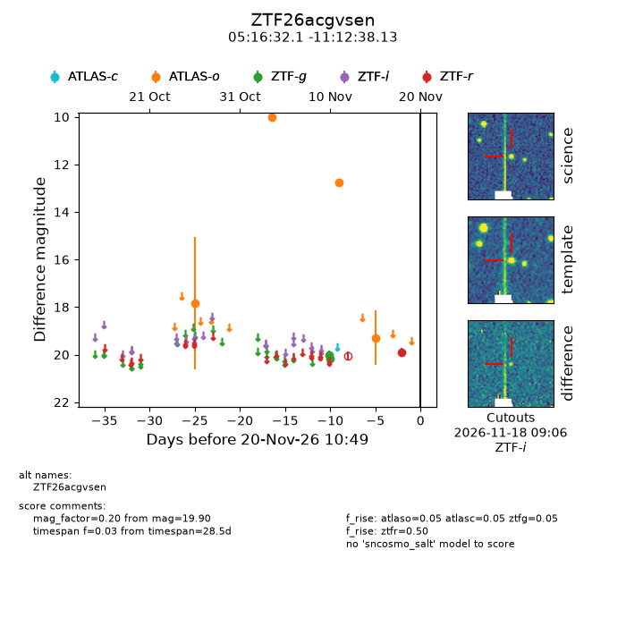
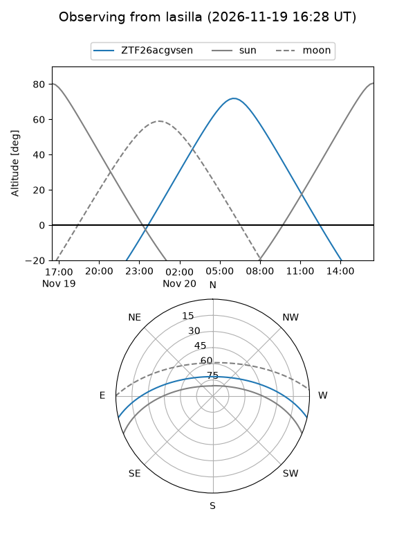
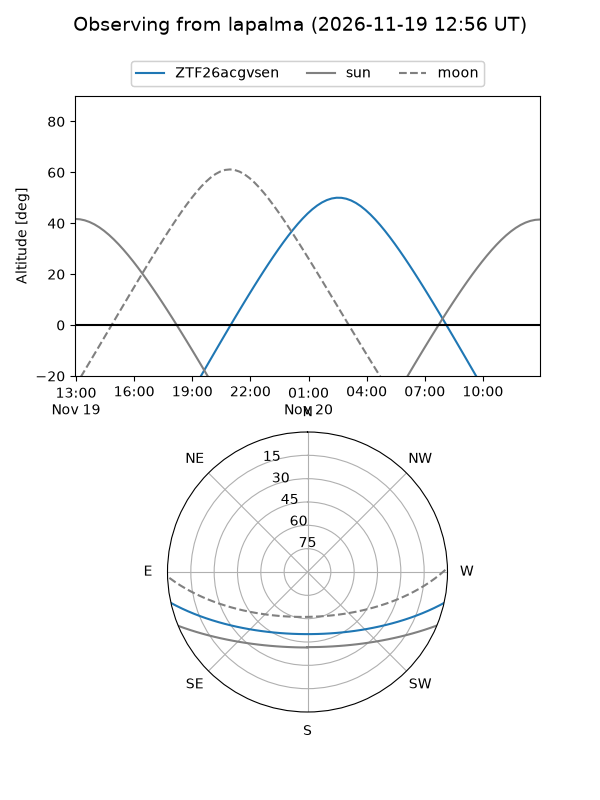
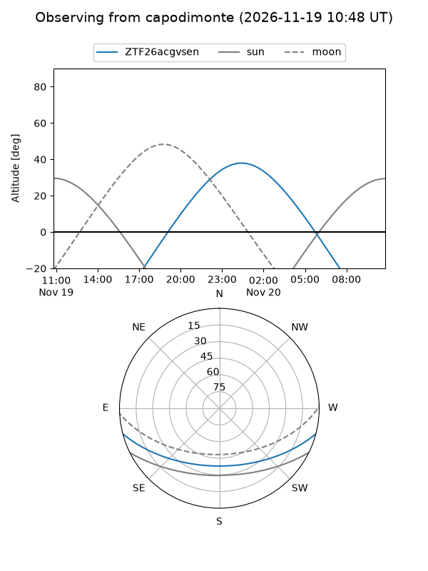
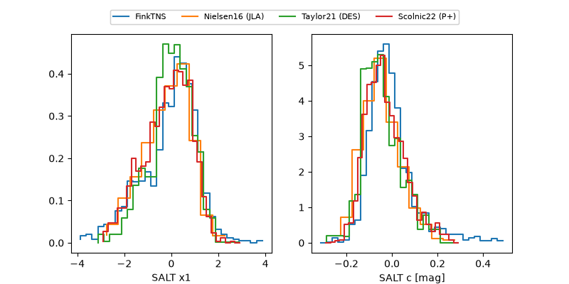

ZTF26acgvsen
Target ZTF26acgvsen at 2026-11-20 10:50
Aliases and brokers:
FINK-ZTF: ztf.fink-portal.org/ZTF26acgvsen
Lasair-ZTF: lasair-ztf.lsst.ac.uk/objects/ZTF26acgvsen
ALeRCE-ZTF: alerce.online/object/ZTF26acgvsen
Direct TNS query: direct search
alt names
ZTF26acgvsen (ztf,fink_ztf)
Coordinates:
equatorial (ra, dec) = 79.1337,-11.21059
equatorial (HMS+DMS) = 05:16:32.09,-11:12:38.13
galactic (l, b) = (212.4891,-26.09831)
Flags:
peak dt:
Photometry:
last atlasc=nan, atlaso=nan, ztfg=20.17, ztfr=19.90
6 atlasc, 13 atlaso, 2 ztfg, 1 ztfr detections
Lightcurve

Visibility



Additional plots
